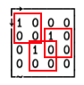

Finding things
Contents
Finding things#
Computer languages of the future will be more concerned with goals and less with procedures specified by the programmer. –Marvin Minsky
Just like with indexing, there seems to be a baffling array of ways to locate items in arrays in APL. As stated in The Zen of Python:
There should be one– and preferably only one –obvious way to do it.
Aha. About that…

⎕IO ← 0
]box on
]rows on
Equality =#
So how do you locate where an element resides in an array in APL? Well, the obvious way to do it is to exploit equality and scalar pervasion. Where is the number 2?
]DISPLAY ↑(2=data)(data ← 4 1 22 20 16 10 25 7 18 11 15 2 12 23 9 17 6 14 21 19 3 8 5 13 24)
That’s surely sufficiently Zen in the Zen of Python sense. Hands up every item that equals 2. We can find out the actual index, too, by using Iota underbar, ⍸, which, as you may recall from an earlier chapter, in its monadic form is appropriately enough called Where:
⍸2=data ⍝ Where is data = 2?
As we should expect by now, scalar pervasion lets scalar functions penetrate any level of nesting:
⎕ ← nested ← (1 2 (3 4 5))(4 (1 2(3 4)))
4=nested
Match ≡#
Match we’ve already met. It is like equality but for non-scalar things. You can be forgiven to think that if you look for a particular vector in a vector-of-vectors, you should be able to use equality, but that doesn’t work:
strings ← 'aaa' 'bbb' 'ccc' 'ddd' 'ccc' 'aaa' 'ccc' 'bbb'
'ccc'=strings ⍝ LENGTH ERROR!
LENGTH ERROR
'ccc'=strings ⍝ LENGTH ERROR!
∧
Instead we need either Jot match each (∘≡¨) or Enclose match each:
⍸'ccc'∘≡¨strings
⍸(⊂'ccc')≡¨strings
Index of A⍳B#
Another way we can find the index of things is via Index of, dyadic ⍳, which we have actually met before:
data⍳2
Dyadic iota finds the first index - or 1 plus the last index if not found. This has the nice feature that we can feed it an array to the right:
data⍳2 3
…which, if we want to use equality requires a bit more dexterity – but this approach would also spot multiples:
⍸∨⌿2 3 ∘.= data
What about if we crank the rank a bit?
⎕ ← mat ← 4 4⍴2 15 16 14 11 9 12 10 13 1 7 5 4 8 6 3
⎕ ← mask ← 7=mat
⍸mask
Gotta love APL.
Find ⍷#
There is of course also a glyph that’s called Find (⍷) which locates the start-points of subsequences:
'ana' ⍷ 'banana'
That combines nicely with ⍸ as a tacit atop to give a bit of an idiom to commit to memory:
substr ← ⍸⍷
'ana' substr 'banana'
We can use find to locate arrays-in-arrays of higher ranks, too:
]DISPLAY needle ← 2 2⍴0 1 1 0
]DISPLAY haystack ← 4 4⍴0 1 0 0 1 0 0 1 0 0 1 0 0 1 0 0
needle ⍷ haystack
The 1s represent the top-left corners of the ‘needle’ array in ‘haystack’:

and we can pick out the actual coordinates using the same idiom we used for substring above:
needle (⍸⍷) haystack
Regular expessions#
Dyalog supports regular expressions through the most excellent PCRE engine. Dyalog’s docs on the topic can be found here, and an APL Orchard cultivation was dedicated to the topic, too. How regexes themselves work is beyond the scope of this book, but an exceptional reference that belongs on every programmer’s bookshelf is Jeffrey Friedl’s Mastering Regular Expressions.
Let’s take a brief look at how regexes are integrated in Dyalog.
Two system operators, ⎕S and ⎕R, implement regex search and replace respectively. They’re both dyadic operators, taking regular expression(s) to the left and transformation(s) to the right. The derived function can be applied to text data.
Here’s a simple example. Using a transformation string of &, ⎕S returns a vector of what was matched:
'll.\sw'⎕S'&' ⊢ 'hello world well worn'
The left operand can be a nested vector of regexes:
'he' 'wo' 'll'⎕S'&' ⊢ 'hello world well worn'
The right operand can be a function, too. This is where it gets a bit hairy flexible. We could have written the above as:
'he' 'wo' 'll'⎕S{⍵.Match}'hello world well worn'
In other words, the right operand function gets passed a namespace representing the match at that point. In this case, the ⍵.Match holds “what the current regex matched” - the same as the magic transformation short-hand '&'.
For capture groups, we have numbered references '\1', '\2' etc, as per Perl:
'(a{2,}|b{2,})'⎕S'\1' ⊢'aaabababbbbbaaaa'
When using a function operand, we have the opportunity to apply the full might of APL to the matches. Let’s find stretches of 2 or longer of a or b, and turn them to upper-case (using Case convert, ⎕C):
'(a{2,}|b{2,})'⎕S{1⎕C ⍵.Match}'aaabababbbbbaaaa'
The regex replacement operator, ⎕R, operates much in the same way, but here the right operand represents a substitution into the right argument:
'a(.)a'⎕R'A\1A'⊢'abababadabaaba' ⍝ \1 is the first capture group
A handy trick is to split strings based on a regular expression, removing the separators in the process. This is tricker than you might guess in Dyalog. Here’s what APL Cart suggests:
rsplit ← {(⊢/¨r)↓¨⍵⊂⍨(⍳≢⍵)∊1+⊃¨r←(⍺,'|^')⎕S 0 1⊢⍵} ⍝ APL Cart
'\d+' rsplit 'aaaa6666bbb1cccc999eee87'
Note the empty segment at the end.
Overlapping matches#
In normal operations, a regex “consumes” what it matches, and any susbequent matches will start where the previous one ended. For example, if we want to capture pairs of letters starting with an a:
'a.'⎕S'&'⊢'abaac' ⍝ Won't return ab aa ac
which won’t capture the last pair ac as it overlaps with the previous match aa. If we want to capture potentially overlapping matches, we have two options. Option 1 is the time-honoured technique borrowed from Perl, using a capture group inside a zero-width lookahead assertion:
'(?=(a.))'⎕S'\1'⊢'abaac'
Zero-width lookaheads (and lookbehinds) work just like normal patterns, except that they don’t consume what they match.
Option 2 is to tell the regex engine that we want to allow overlapping matches via a Variant (⍠) setting to ⎕S:
'a.'⎕S'&'⍠'OM'1⊢'abaac'
This is both elegant and clear: variant OM is Overlapping Matches. See the docs for more details on the various options that can be enabled with Variant.